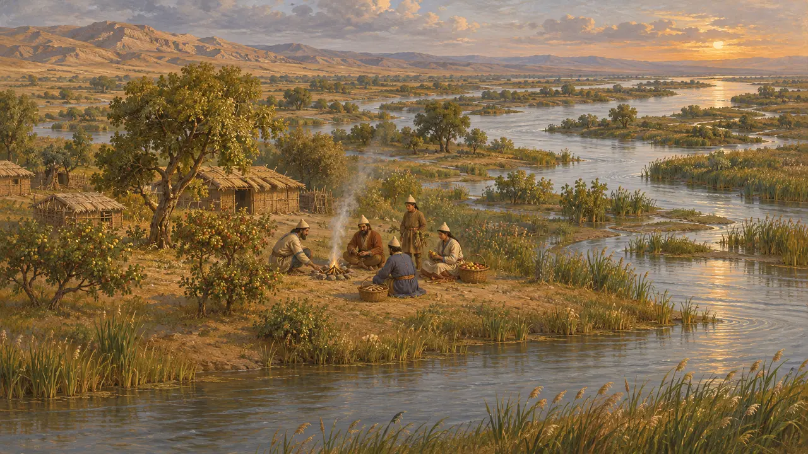
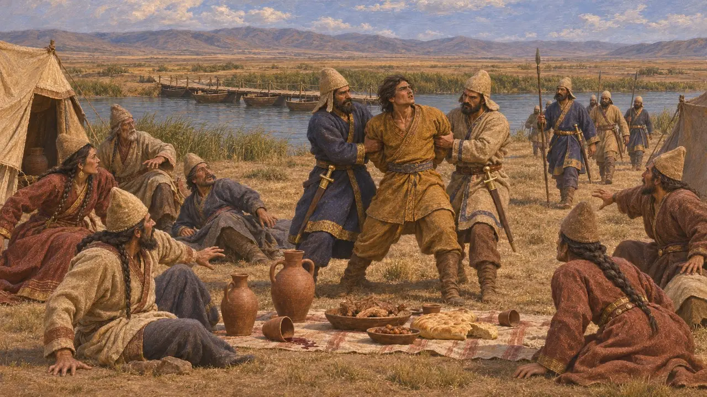
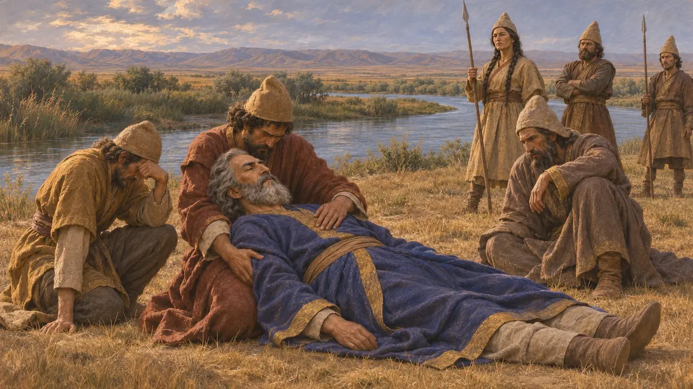
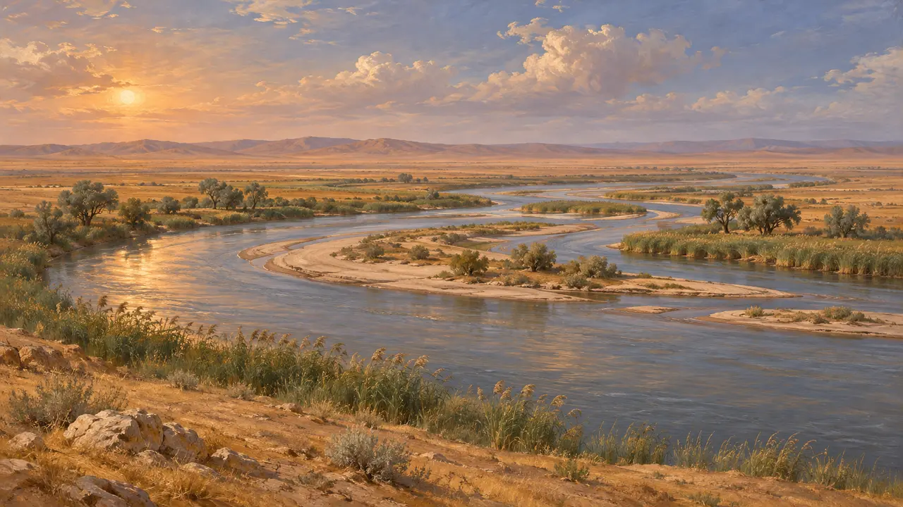

Araksesnehri
Kyros'un Massagetlerle savaştığı ve MÖ 530'da öldüğü nehrin ötesindeki nehir
Herodotos, Kyros'un Massagetlere saldırmak için geçtiği nehre Araxes adını verir. Nehir doğuya, Hazar'a doğru akıyordu ve ötesinde göçebelerin toprakları ile kraliçeleri Tomyris yer alıyordu. Herodotos'un hangi nehri kastettiği kesin değildir: çoğu kişi bunun Armenia'daki Araxes değil, Oksus ya da Yaksartes olduğunu düşünür.
Oyunda: Araksesnehri, Pasargadai bölümünün Kroniği'nde ve sohbetlerinde, Kyros'un öldüğü seferde Kral'ın ordusunun geçtiği nehir olarak anılır.

Adalardan oluşan bir nehir
Antik anlatıHerodotos, bazılarının Araxes'e İstros'tan büyük, bazılarının ise küçük dediğini; nehirde Lesbos kadar büyük birçok ada bulunduğunu, bu adalarda yaşayanların kök ve meyvelerle beslendiğini ve yanan bir meyvenin dumanından sarhoş olduklarını söyler. Nehrin Matienlerin ülkesinde doğduğunu ve kırk ağızla denize aktığını, bunlardan biri dışında hepsinin bataklıklara döküldüğünü anlatır.
Herodotus 1.202

Köprü ve tuzak
Antik anlatıHerodotos'a göre Tomyris, Kyros'a ya nehri engellenmeden geçmesini ya da kendi yakasında savaşmasını önerdi. Kyros, Kroisos'un öğüdüyle karşıya geçti, şarap ve yiyecekle dolu bir kamp bırakıp orada ziyafet çeken Massagetlerin üzerine çullandı ve Tomyris'in oğlunu esir aldı.
Herodotus 1.205-211

Kyros'un ölümü
TartışmalıHerodotos'ta Kyros, nehrin ötesinde çetin bir savaşta öldürülür ve Tomyris onun başını kan dolu bir tulumun içine koyar. Herodotos başka rivayetlerin de anlatıldığını kabul eder. Ktesias, Kyros'un Derbiklerle savaşırken aldığı bir yaradan öldüğünü söyler; Ksenophon ise onu evinde huzur içinde öldürür. Hiçbir Pers kaydı bunu anlatmaz.
Herodotus 1.214; Ctesias, Persica; Xenophon, Cyropaedia 8.7

Hangi nehir?
TartışmalıHerodotos'un birkaç nehri tek bir Araxes'te birleştirdiği anlaşılıyor. Hazar'a doğru doğuya akan bir nehir tarifi, Armenia'nın Araxes'inden çok Oxus'a (Amu Derya) ya da Jaxartes'e (Siri Derya) uyar; tarihçiler de Massagetler'i Hazar'ın doğusuna yerleştirir.
P. Briant, From Cyrus to Alexander, 2002
Kaynaklar
- Herodotus 1.201-216
- Ctesias, Persica (Photius's summary)
- P. Briant, From Cyrus to Alexander, 2002